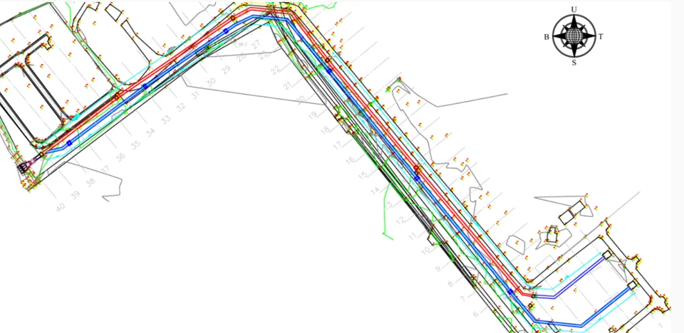
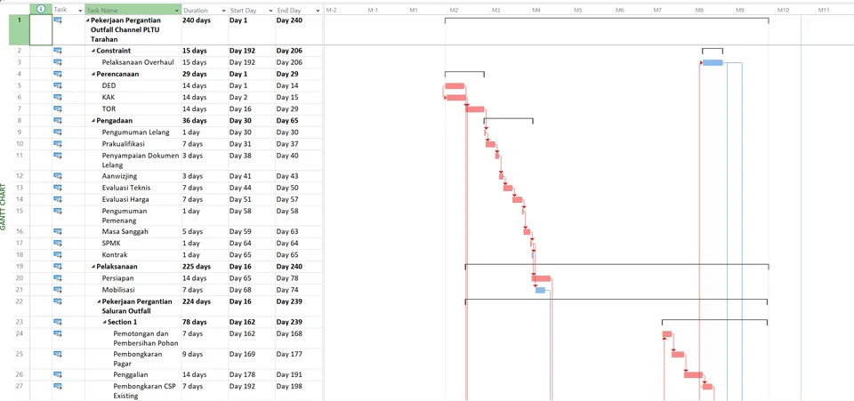
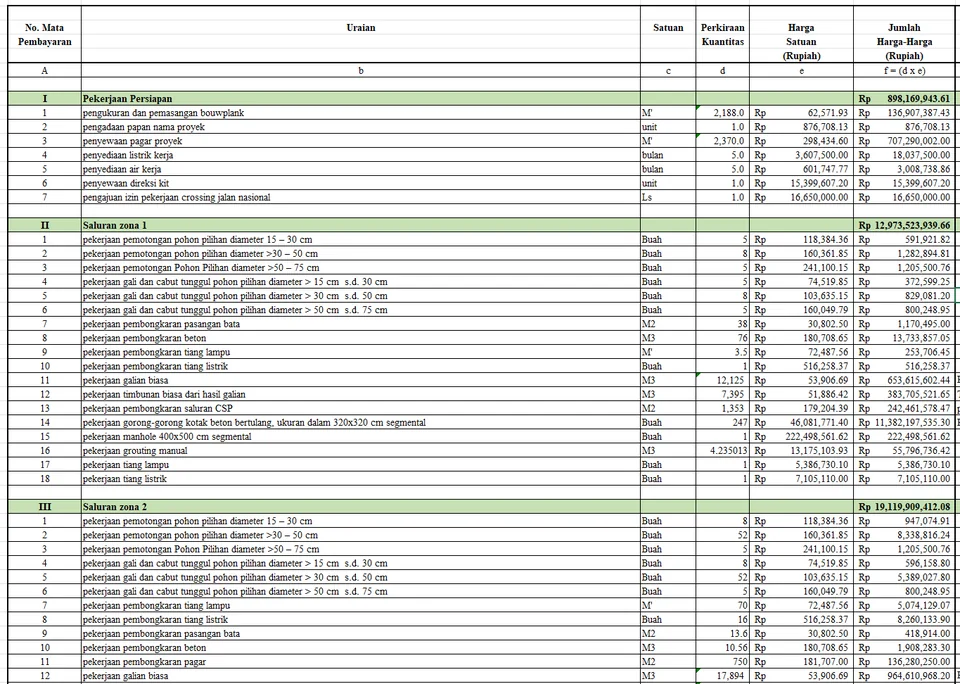
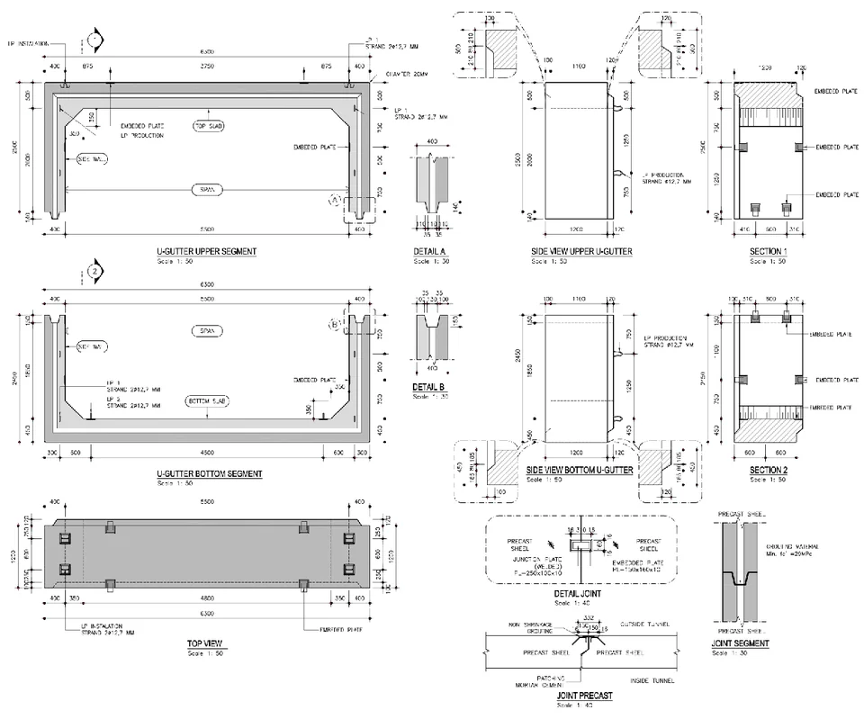

COST ESTIMATOR · Aug – Nov 2025
Outfall Condensor —
PLTU Tarahan, Lampung
Cost estimation and Bill of Quantities for the outfall condensor structure at PLTU Tarahan thermal power plant, covering work method analysis, construction schedule, and quantity calculations.

Overview
PLTU Tarahan is a coal-fired thermal power plant in Lampung. This project focused on developing the Bill of Quantities and cost estimate for the outfall condenser structure with box culvert and corrugated steel pipe.
The work required a thorough understanding of the construction methods and material quantities.
Scope of Work
- Developed and evaluated multiple work method options for construction of the outfall condenser
- Assessed the technical and cost feasibility of each construction method
- Calculated detailed work volumes and material quantities for all structural elements
- Prepared a complete Bill of Quantities (BoQ) in accordance with project specifications
- Presented findings and recommended the most cost-effective and constructible method
Key Deliverables
- Work Method Analysis Report with feasibility assessment
- Volume and quantity calculations for all structural works
- Complete Bill of Quantities (BoQ) document
- Cost estimate summary
Documentation

Proposed construction schedule and phasing for the outfall condensor.

Bill of Quantities — Microsoft Excel

Outfall Condenser Structure Reference